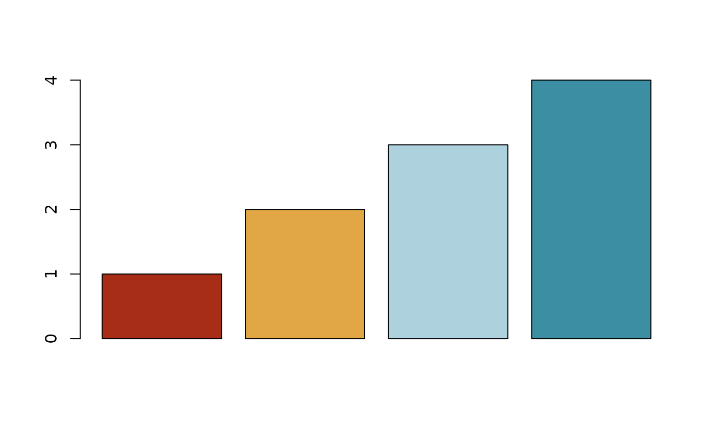

Colour palettes following the March 2018 ECDC guidelines for presentation of surveillance data
EcdcColors.RdFull document: European Centre for Disease Prevention and Control. Guidelines for presentation of surveillance data. Stockholm: ECDC; 2018. Available from: Guidelines for presentation of surveillance data
Arguments
- col_scale
Selected colour scale, defaults to 'green'. Select from 'green', 'blue', 'red', 'grey', 'qual(itative)' or 'hot(cold)'
- n
Number of colours from each colour scale, apart from grey, in order indicated in the guidelines. Defaults to one colour, apart from two colours for the hotcold scale, max 7-8 colours for each scale. To select grey shades, use the argument grey_shade; to select number of hot (warm) colours in the hotcold scale, use the argument hot_cols.
- grey_shade
(Optional: use only for 'grey') Selected shade(s) of grey in selected order; c('light', 'mediumlight','medium','mediumdark','dark'). Overrides given number of colours (n). Defaults to 'medium'.
- hot_cols
(Optional: use only for 'hotcold') Selected number of hot (warm) colours in the hotcold colour scale. Must be smaller than the total number of colours (n). Defaults to floored half of total hotcold colours.
Examples
# Select three first green colours
EcdcColors("green", n=3)
#> [1] "#C9D971" "#65B32E" "#1A6E31"
# Select two first qualitative colours
EcdcColors("qual", n=2)
#> [1] "#65B32E" "#7CBDC4"
# Select seven red colours
EcdcColors("red", n=7)
#> [1] "#7C170F" "#A82D17" "#C34A17" "#CC6B21" "#DC9635" "#E9B855" "#F1D676"
EcdcColors("grey", grey_shade = c("mediumlight", "dark"))
#> [1] "#C7C7C7" "#3F3F3F"
# Use in a graph
# Dummy data
mydat <- data.frame(ID = c(seq(1,10,1)),
Gender = c(rep(c("F", "M"),5)))
barplot(table(mydat$Gender),
col = EcdcColors(col_scale = "qual", n=2))
# Hot-cold colour scale
barplot(c(1:4),
col = EcdcColors(col_scale = "hotcold", n = 4, hot_cols = 2))
